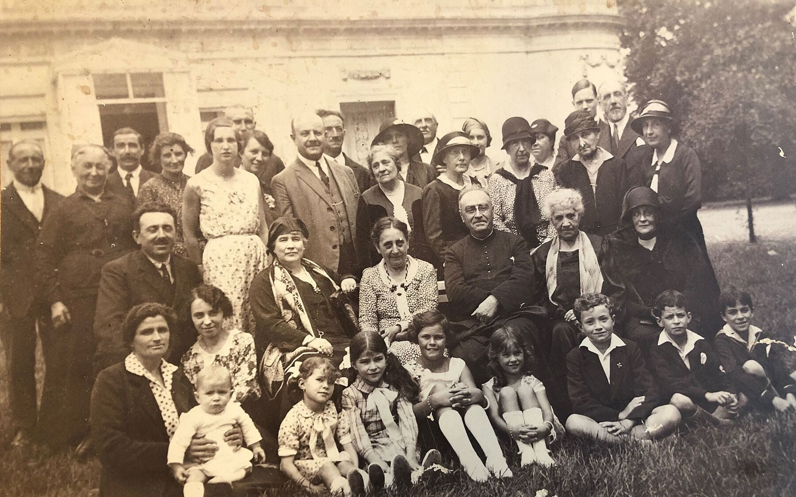
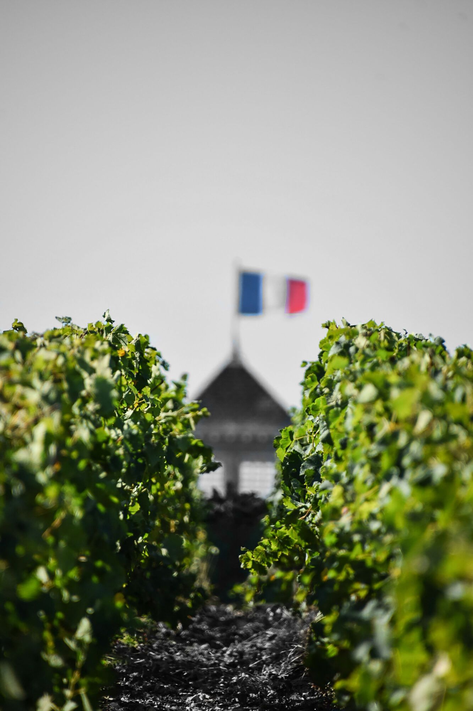
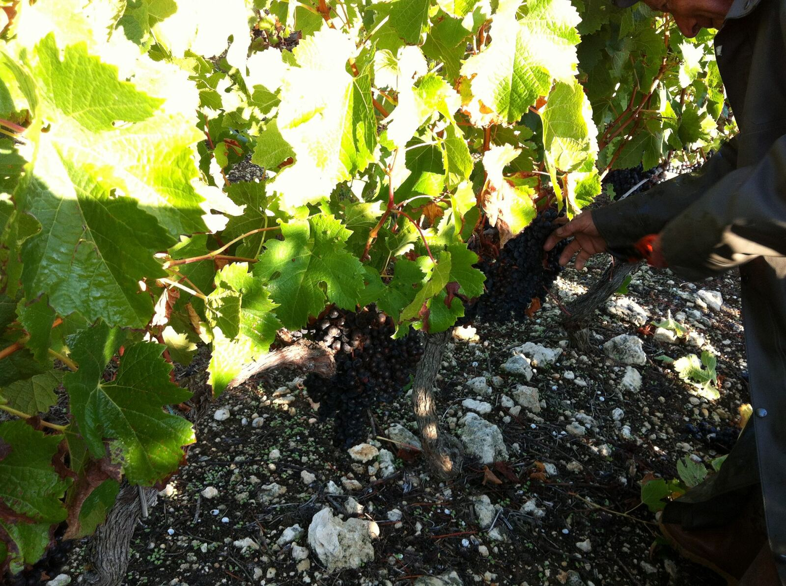

Trois châteaux, une même racine : l’histoire de la famille Miailhe
Coufran, Verdignan, Soudars : trois noms sur trois étiquettes, et une seule famille derrière. Voici comment trois générations de Miailhe ont fait entrer trois châteaux du Haut-Médoc dans leur histoire, et pourquoi chacun a gardé son propre caractère.

Avant les châteaux, des courtiers
Avant d’être vignerons, les Miailhe étaient courtiers en vins à Bordeaux. Le courtier est l’intermédiaire de la place de Bordeaux : il goûte, il compare, il conseille, et il met en relation les propriétés et les négociants. C’est un métier où l’on apprend à reconnaître un vin prêt d’un vin qui ne l’est pas encore.
Cette expérience a façonné la famille. On la retrouve aujourd’hui dans sa manière de faire et de vendre ses propres vins.
1924 : Louis et Château Coufran, le pari du merlot
En 1924, Louis Miailhe achète un domaine au nord de Saint-Seurin-de-Cadourne et lui donne son nom définitif : Coufran. Les archives du XVIIIe siècle citaient déjà la maison noble de « Cousran ».
Le vignoble est alors planté surtout en cabernet, et le vin se vend mal. Louis prend une décision rare dans le Médoc : il arrache et replante en merlot, un cépage plus rond et plus souple. Le pari tient toujours. Coufran compte aujourd’hui 76 hectares d’un seul tenant, sur une colline de graves et d’argiles qui regarde l’estuaire, et son vignoble est planté à 85 % de merlot.
Un journaliste l’a surnommé « le Pomerol du Médoc », en référence à l’appellation de la rive droite où le merlot domine. Le caractère de Château Coufran, c’est celui du grand-père : un vin rond et généreux, qui se laisse apprécier tôt.

1976 : Jean et Château Verdignan, le vin de garde
Jean Miailhe, le fils de Louis, reprend Coufran. En 1976, il achète le domaine voisin : Château Verdignan, l’une des plus anciennes propriétés viticoles de Saint-Seurin-de-Cadourne, reconnaissable à sa tour et à sa haute flèche d’ardoise.
Verdignan montre un autre visage du Médoc. Ses 60 hectares font face à l’estuaire, à la frontière de Saint-Estèphe. Autour du château, les graves portent de vieux cabernet-sauvignon, qui représentent 65 % du vignoble. Le vin est plus structuré, plus droit, et il gagne à attendre. Château Verdignan, c’est le vin du père : celui de l’élégance et de la patience.
Jean est aussi le dernier courtier de la famille. Il garde de ce métier une conviction : un vin doit sortir du château quand il est prêt, pas avant.
1980 : Éric et Château Soudars, partir de rien
Éric Miailhe, le fils de Jean, choisit une autre voie. En 1980, il achète quinze hectares de friches couvertes de pierres et de ronces, sur un sol d’argile posé sur le calcaire. Là où personne n’attendait de vignoble, il faut épierrer, préparer les sols et presque tout replanter.
Créer un cru de toutes pièces est rare dans le Médoc, où la plupart des châteaux se transmettent depuis des générations. Château Soudars compte aujourd’hui 22 hectares, plantés à parts presque égales de merlot et de cabernet-sauvignon. Son vin est fruité et souple : c’est le vin du fils, celui qui a bâti sa propre terre.

2006 : Lovely, la quatrième génération
Depuis 2006, Lovely Miailhe, la fille d’Éric, travaille à ses côtés. Avec Marie-Cécile Vicaire, la sœur d’Éric, chargée de l’administration, la famille veille aujourd’hui sur les trois châteaux. Ils partagent les mêmes équipes, la même logistique et la même façon de travailler, tout en gardant chacun leur vin et leur étiquette.
Trois caractères, une même racine
Pourquoi garder trois châteaux distincts plutôt qu’un seul grand domaine ? Parce que chacun raconte une génération et un terroir différents :
- Coufran, le grand-père : le merlot sur les graves, un vin rond et généreux ;
- Verdignan, le père : le cabernet face à l’estuaire, un vin de garde élégant ;
- Soudars, le fils : l’argile sur le calcaire, un vin fruité et souple.
Ce qui les relie ne se voit pas : la famille, le terroir du Haut-Médoc et une habitude rare dans la région. Les Miailhe gardent leurs bouteilles au château et ne les vendent que lorsque le vin est prêt à boire.
Au-dessus du sol, trois vins différents. Sous la terre, une même racine. Pour savoir lequel vous correspond, le test « Quel château vous ressemble ? » vous oriente en quelques questions, sans rien connaître au vin.
Questions fréquentes
Où se trouvent les châteaux de la famille Miailhe ?
Les trois châteaux, Coufran, Verdignan et Soudars, sont à Saint-Seurin-de-Cadourne (33180), au nord de l’appellation Haut-Médoc, au bord de l’estuaire de la Gironde, à environ une heure de route de Bordeaux.
Quel château de la famille Miailhe choisir ?
Coufran pour un vin rond et souple, porté par le merlot ; Verdignan pour un vin plus structuré, qui gagne à vieillir ; Soudars pour un vin fruité, agréable dès sa jeunesse. Le test « Quel château vous ressemble ? » aide à choisir en quelques questions.
Peut-on visiter les châteaux de la famille Miailhe ?
Oui, sur rendez-vous, pour les particuliers comme pour les professionnels. Les visites se réservent au +33 5 56 59 31 02.
L’abus d’alcool est dangereux pour la santé, à consommer avec modération.